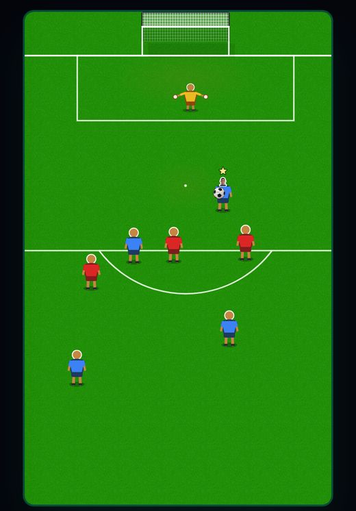
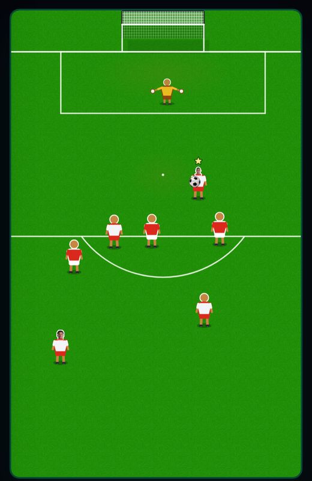
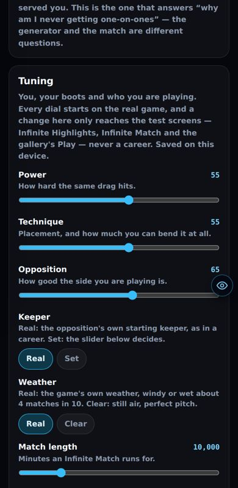
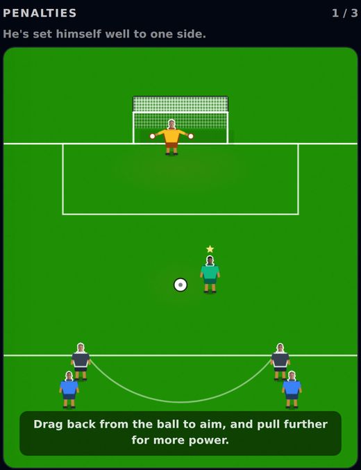
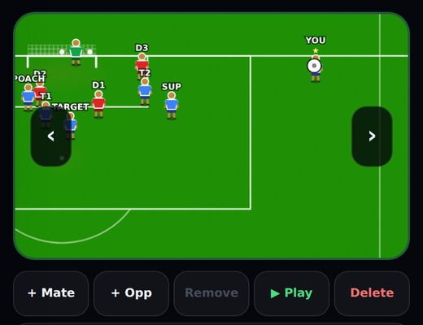
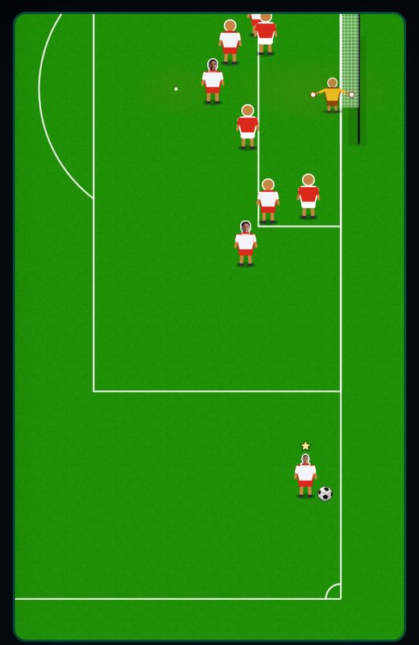

Harry's patch notes
One engine. Why the trial, the training and the test screens felt like a different game, what is fixed, what still isn't, and the questions only you can answer.
The problem, in one picture
There was one real match, and four screens running their own copy of it. Each copy was right on the day it was made. Then the real match kept improving, and the copies didn't.
The other copies
- Goalie Mode (Casino): its own ball flight entirely, no engine at all. Question 4.
- Bicycle kick and Live Attack: two dev prototypes, not in the game. Question 5.
- Mikey's match lab (/star-match-dev): a deliberate copy for trying physics. It stays a lab.
Fixed: the test screens now play the real game
Gallery Play, Infinite Highlights and Infinite Match already used the real engine. But they set it up differently from a career match, and that alone changed how it felt.
-
A drag now hits exactly as hard as in a careerThe game measures your drag as a share of the pitch's height, so a smaller pitch meant a harder kick. The gallery played at 340px on a phone, and at 460px on a laptop (too soft). Every test screen now plays at the real match's size.
-
Real players, not nobodyThe gallery had no squad at all, so team-mates finished like anonymous men (no curl, no chip, no first-time finish) and every keeper was a flat 62. Test screens now load the same real squads a career does. Checked in the match: Eze, Saka and Rice for Arsenal, against Coventry's own keeper, Rushworth.

Before: blue against red, nobody in the shirts, 340px wide. 
After: real kits and real players, 366px, the real match's size. (Photos are blocked in the test browser, so most heads show plain here. The players are real.) -
Real weather, with a switchA career has wind or rain in about 4 matches in 10. The test screens never had any. They now use the real weather, and a line above the pitch says when it's windy. Play Area → Weather → Clear turns it off.
-
Infinite Match stopped quietly weakening youYour energy drained as if one 90-minute match ran for 10,000 minutes. From about minute 150, every kick was 30% weaker for the rest of the run. You now get fresh legs every 90 minutes. Worked out from the code, not measured in play.
-
Team understanding now counts in test screensA career passes how well your team combines, and the test screens silently used 60. The new guard caught this one on its very first run.
-
The first chance in gallery Play now has people in itEvery chance after the first gets real players put into the shirts, but the first one never did. Gallery Play only ever plays its first chance, so it never had any.
-
Gallery Play no longer restarts mid-kickAnything that redrew the card, even a phone's address bar hiding, threw the chance away. It now restarts only if the picture actually changes.
Added
-
One door into the engine for every test screenA new feature plugs into it and adds its own buttons and scoring around the outside. It can see each chance before it starts and how it ended. It never gets its own copy of the match.
-
Play Area: Keeper and Weather switchesBoth start on the real game. Keeper → Set brings back the rating slider. Every dial now says plainly that it only changes the test screens, never a career.

The two new rows, both on Real by default. -
A rule every Claude session readsWritten into the team's shared instructions, plus a skill that loads whenever anyone builds anything that plays football. It says: use the one door, never copy the match, and never edit the guard unless one of you asks for exactly that.
The guard, and whether it can fail
It runs inside every Vercel deploy. If anything tries to add a new copy of the match, the site doesn't deploy, and the build log says exactly what to fix. You asked whether it could fail or fade, so Fable 5.1 was set to break it: it planted 31 tricks against the first version. What it found, and what's done about each:
| How a guard fails | Now | Why |
|---|---|---|
| Nobody runs it | fixed | It's inside the build itself, so a deploy can't skip it. One thing to check: Vercel's Build Command setting must be the default (question 9). |
| A copy hidden by renaming, re-routing or loading it late | fixed | The first version read the code as text and missed 21 of 31 tricks. It now reads the code the way the compiler does and follows every name back to where it came from. |
| It goes blind and passes everything | fixed | 10 hidden copies sit in a test folder on purpose. If it ever stops seeing one, the build fails with "GUARD IS BLIND". Tested by removing one: it failed. |
| A false alarm blocks all three of you | fixed | Two harmless look-alikes (a button called "launch", a type-only use) must NOT trip it, or it fails with "GUARD IS JUMPY". Tested. |
| A screen writes its own ball physics without touching the engine | fixed | Every screen with its own animation loop has to be on a list that only shrinks. That's how Goalie Mode was found. |
| The test screens drift from the career match's settings | fixed | Any setting a career passes to the engine has to reach the test screens too, or be named as career-only. This caught team understanding. |
| It crashes | fixed | A crash fails the build rather than waving it through. |
| Someone edits its list to make a red build green | needs you | Code can't stop a person editing code. Two safety nets need your yes: questions 9 and 10. |
| Physics copied under a new name, with no animation loop of its own | rule only | Nothing automatic sees it. The written rule covers it. |
What the build log shows
ONE ENGINE GUARD (19.4s)
6 copies of the match still to port (6 on 24 Sep 2026):
- copy still to port: trial penalties + free kicks
- copy still to port: training strike drills
- …
✓ no new copies; every test screen goes through the one door with the career match's settings; the canary is seen.
✗ components/star/NewDrill.tsx runs its own copy of the match.
Build it on EnginePlay instead — see .claude/skills/one-engine.
It adds about 20 seconds to each deploy.
"Players don't react after shots in highlights"
Measured: the highlights are the same as the real game here. The difference is the drawn chances. Hand-drawn one-on-ones and tight angles start much closer to goal, so the shot arrives before anybody has time to move. Players only react once the ball comes near them. A real match plays the same drawings, so it has exactly the same gap.
Team-mates who move after the shot, averaged over 200 chances each. The other six chance types are identical in all three. Drawn one-on-ones start 11.9m from goal, against 16.3m for generated ones, and the shot arrives in 1.84s instead of 2.32s. Question 8.
Known issues: every problem found, with the fix
The trial and the training (fixed together by moving them onto the one door)



- The trial keeper guesses before you kick question 1This is the "dives wrong" you felt. It was added to the trial on purpose, because real-match penalties have a strip about 1–1.3m inside each post that no keeper can reach at any rating (92% scored in the corners, against 64–71% on a one-on-one).
- The ball is drawn at half its heightBut the crossbar is drawn full height, so a shot over the bar can look like it went under it. Trial and training.
- The ball is always drawn in front of the keeperThe real match puts him in front once he's beaten.
- Training runs a coarser physics stepOne step a frame against the match's three. Post and bar hits resolve differently, the free-kick wall never jumps, and the wall stands 0.75m apart instead of 1.15m.
- The keeper is drawn 22% biggerAnd he has none of the match's catch, low, high or fingertip save poses.
- Trial kicks are "cleaner" than match kicksNo free-kick rating on set pieces, no tiredness, no weather, no curve boots.
- After the result, things behave differentlyIn the trial the ball rolls on after a save, where the match stops it. In training the ball and the keeper freeze mid-air.
- Smaller differences
Five more
- The weakest kick that still counts is 5% power in the trial and training, 2% in the match.
- Nobody in the trial has a running animation. Only your kick moves.
- The training dribble drill is the old top-down game, not the match's first-person duel.
- Training's "out of play" box may not match what's on screen (worked out from the code, not seen).
- Training faces ignore your Face Editor settings.
- The fix for all of the above ready next roundRebuild the trial and the training on the one door. Every difference above then disappears at once, because there's no second copy left to drift. Question 2.
Five-a-side, Goalie Mode and the prototypes
- Five-a-side: a sideways drag hits 20% harder question 3Its drag maths aren't the match's. The arrow also points about 20% wider than the ball actually goes, and defenders don't move while the ball is in the air.
- Goalie Mode has no engine at all question 4It uses its own scripted ball flight, and its keeper stops dead when the result lands.
- Two dev prototypes are full copies question 5The bicycle kick and Live Attack. Neither is reachable in the game.
Found while checking this round


- Two teams in near-identical kits question 6Red shirts with white shorts against white shirts with red shorts passes the kit-clash check, because the check only compares shirts. This is the real game's check, so it can happen in a career too.
- The gallery picture and Play now use different kit colours caused this roundPlay wears real club kits now, and the picture still draws blue against red. Players are still in the same places, but the colours change when you press Play. Question 7.
- Gallery corners and crosses: the picture isn't turned like the game Mikey / LeoThe main game and Play draw them sideways, and the still picture doesn't. To match, the picture needs to turn the same way.
- The laptop gallery picture shrank from 460 to 384pxThis was deliberate, to match the career match's size, but it'll look smaller.
- A scenario test fails on main Mikey / LeoIt expects 27 one-on-one drawings, and 4 were deleted in recent commits. It fails with or without this round's changes.
Carried over from v0.8, still open
- draft-dev pages aren't sandboxes: they write to the real Draft save, history, XP, records and rooms.
- The goal looks different in Play and in the picture: the net rises above the goal line, and there's no six-yard box.
- The Scenario Builder can't reach the game: it has no commit, and its "saved locally" text is wrong.
- The Tuning editor only saves in the browser. It commits nothing.
- Small items: the squad builder's bench is 7 vs 9 · Infinite Highlights is missing from the admin menu · some admin pages have no page-level check ·
custom_clubs.sqlstatus unknown. - Team-mates right next to you steal your shot as a pass: needs Mikey's engine OK.
- Keeper near-post 0.50 on tight angles: waiting on your go.
- Not seen yetSave and Commit with an admin sign-in. Real photos inside the test screens: the test browser blocks them, and the players were checked by name instead. Infinite Match's fresh legs were worked out from the code, not played.
Your questions: copy, answer, paste back
Each one is ready to paste. Delete the options you don't want, or just write the letter.
The trial keeper guesses a side before you kick. The match keeper doesn't. Which way?
- Into the real game: match penalties get the same guess, so they stop being 92% in the corners.
- Drop it: trial penalties become exactly as hard as match penalties.
- Trial-only: a switch on the one door, off everywhere except the trial.
Recommended: A. The unsaveable strip is a real-game problem, and fixing it once fixes both.
One engine, question 1 (trial keeper guess): I choose ___ . Notes:
This fixes all 12 differences at once. Do it first, before the difficulty work?
- Yes, first: then difficulty scaling is tuned on the real game.
- After difficulty.
- Only the trial now, and training later.
Recommended: A. Tuning difficulty on a copy that's about to be deleted is wasted work.
One engine, question 2: move trial penalties, free kicks and training strike drills onto the one door — ___ .
Five-a-side stays its own game, but should its drag, arrow and defenders match the real match's?
- Yes: sideways drags get about 20% weaker than today, the arrow points where the ball actually goes, and defenders move while the ball is in the air.
- No: leave it as it is.
Recommended: A. An arrow that lies is a bug whatever the game is.
One engine, question 3 (five-a-side drag/arrow/defenders): ___ .
It's a first-person keeper game with its own ball flight. Separate game, or rebuild it on the engine?
- Separate game: the guard lists it as its own game, on purpose.
- Rebuild: shots use the real engine's flight, curl and speed.
No strong lean. B is more work, but shots would feel like the real ones.
One engine, question 4 (Goalie Mode): ___ .
The bicycle kick and Live Attack are full copies, and neither is in the game.
- Delete both.
- Rebuild them on the one door.
- Keep them as labs, listed.
One engine, question 5 (bicycle kick + Live Attack): ___ .
Should the kit-clash check compare the whole kit (shirt and shorts), and switch to the away kit when two teams look alike?
- Yes.
- No, shirts only is fine.
Recommended: A. It's the real game, and it happens in careers.
One engine, question 6 (kit clash on whole kit): ___ .
Play wears real club kits now, and the still picture is blue against red. Make them match how?
- The picture draws the real kits too.
- Blue against red in the gallery's Play only, as a gallery setting.
- Leave it.
Recommended: A. Play is the real game, so the picture should look like it.
One engine, question 7 (gallery picture kit colours): ___ .
Drawn one-on-ones start 11.9m out, against 16.3m for generated ones, so fewer players react in time. What should happen?
- Leave it: the drawings are how it should look.
- Draw more from further out (Mikey and Leo).
- Let the game place drawn chances a little further back.
One engine, question 8 (drawn chances start close, fewer reactions): ___ .
Should every Claude session (mine, Mikey's, Leo's) be stopped from editing the guard's lists unless a person approves in that chat? And should the guard run at the end of each Claude turn that changed code, adding about 20 seconds?
- Both.
- Only the lock.
- Neither, the written rule is enough.
Recommended: A. It's the only thing that stops a session quietly making a red build green. Also check once: Vercel → Settings → Build Command should be the default (npm run build). If someone has typed "next build" there, the guard is skipped.
One engine, question 9 (lock the guard in Claude sessions + run at end of turn): ___ . Vercel build command checked: yes/no
GitHub can require one of you to approve any change to the guard files before it reaches main. I can add the file that names you as the owner. You'd switch on the rule in GitHub's settings: one tap per guard change, nothing for anything else.
- Yes: add it and tell me the steps.
- No.
One engine, question 10 (GitHub sign-off on guard changes): ___ .
Next
- Trial and training onto the one doorThis clears the 12 differences, and the guard's list drops from 6 to 4 by itself.
- Then difficulty scalingFrom the v0.8 deep dive, tuned on the real game rather than a copy.
Previous versions
v0.8 — 23 Sep 2026 · scenario tutorial, save from a match, difficulty deep dive
- Stats: 156/156 saved chances come back exact · 26 pages got the eye · Play vs picture on a phone 9% → 0% · ~1 in 1,000 still playing on the day they'd reach the Prem.
- Fixed: Save and Commit pinned in Infinite Match · Save and Commit on every highlight · Play no longer bigger than the picture on a phone · a card no longer goes blank on a resize · button rows fit at 390px.
- Added: the eye on 26 admin and dev pages · a save-from-match test · the full scenario tutorial and the difficulty and paying deep dive (still on the v0.8 page).
- Changed: Tune corrections shared · Leo's 11 scenarios in the code.
- Still open from it: draft-dev pages · the goal drawn differently · the Scenario Builder · the Tuning editor · small items · team-mates stealing the shot · keeper near-post. All in Known issues above.
v0.7 — 23 Sep 2026 · Play matches the picture, the difficulty research
- Fixed: pressing Play no longer made the picture jump (13% → 0% on a laptop) · the ball drags on its own again · false "attacker offside" (3/65 → 0/65) · ✓ on a sim now saves it · every commit also saves · added team-mates make real runs.
- Added: Edit this chance in Infinite Match · Infinite Highlights saves land in the gallery.
- Still open from it: team-mates stealing the shot · keeper near-post · camera framing. "Not the same game" is answered by this version.
v0.4 — Play Area, Infinite Match, commit review
- Play in the gallery used your saved drawing, the Play Area and Infinite Match arrived, and scenarios could be reviewed before committing.
v0.3.5 — from the 40-minute call
- Delete on any scenario, the X relabelled No good, and every decision and idea from the call written down.